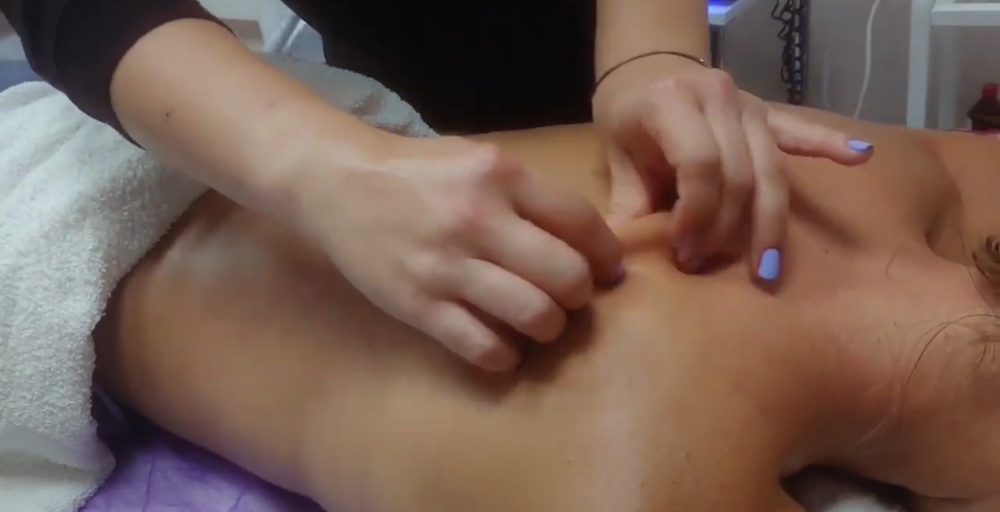

Відпочиньте від повсякденної метушні та отримайте незабутнє розслаблення в нашому кабінеті масажу.
Записуйтесь за телефоном 050 - 521 - 65 - 50. Ми чекаємо на Вас!


Відрізняється від звичайного релаксуючого масажу тим, що має чітко визначену мету і спрямований на конкретну проблему або хворобу.
Основні принципи медичного масажу полягають у використанні різних технік масажу для покращення кровообігу, розслаблення м'язів, зниження болю та покращення рухливості суглобів. Крім того, медичний масаж може бути використаний для підвищення імунітету та загального тонусу організму.
Одним з найважливіших елементів медичного масажу є правильна техніка виконання. В залежності від конкретної мети масажу, застосовуються різні техніки, такі як глибокий масаж, круговий масаж, вібраційний масаж, пляжний масаж та інші. Для досягнення максимального ефекту важливо правильно вибрати техніку, яка найкраще підходить для конкретної проблеми.
Крім техніки виконання, для успішного масажу необхідні також деякі знання з анатомії та фізіології людського організму. Наприклад, знання про те, які м'язи відповідають за певний рух, може допомогти вибрати правильну техніку масажу для покращення рухливості суглобів.
Медичний масаж може бути використаний для лікування різних захворювань, таких як біль у спині, шийному відділі, артрит, мігрень, тривога та депресія. Однак перед початком лікування вам треба записатися.

Масаж покращює кровообіг та лімфодренаж, а також зменшенню болю та запаленню. Для досягнення цих цілей може використовувати різні техніки масажу, лімфодренажний масаж та інші.
Кожна техніка масажу має свої особливості та протипоказання, тому зроблю відповідну техніку для кожного конкретного випадку. Наприклад, глибокий масаж тканин може бути корисним для лікування м'язових напружень та болю, але він не рекомендується для людей з певними медичними проблемами, такими як тромбофлебіт, артрит або серцево-судинні захворювання.
Крім техніки масажу, можливо також може використовувати різні масажні масла та креми для поліпшення ковообігу та поживлення шкіри. Однак, необхідно звернути увагу на те, що деякі масла можуть бути алергенними для деяких людей, тому завжди повідомляйте перед масажом про свої алергії або чутливість до якихось інгредіє

Це процедура стимуляції поверхні тіла, а через неї – м’язів та внутрішніх органів. Методи впливу можуть бути різної інтенсивності, від легких погладжувань до сильного розминання та розтирання. Все залежить від призначення процедури, яка виконується вручну.
Лікувальний масаж впливає на організм людини відразу на трьох рівняхКласичний масаж застосовується без врахування рефлекторної дії та проводиться близько від пошкодженої ділянки тіла або безпосередньо на ній.
Рефлекторний масаж проводять із метою рефлекторної дії на функціональний стан внутрішніх органів і систем, при цьому використовують спеціальні прийоми, діючи на відповідні зони – дерматоми.
Сполучнотканинний масаж спрямований на підшкірну клітковину.
Періостальний масаж діє на точки у відповідній послідовності, викликаючи рефлекторні зміни в окісті.
Точковий – це різновидність лікувального масажу, коли локально та лінійно діють розслаблювальним або стимулювальним способом на біологічно активні точки відповідно до показів при захворюванні.
Апаратний масаж проводять із допомогою вібраційних, пневмовібраційних, вакуумних, ультразвукових, іонізуючих приладів. Застосовують також його різновидності (бароелектростимуляційний, аерогенний, аплікаторний).
